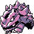

#111
Rhyhorn
GroundRock
Its massive bones are 1000 times harder than human bones. It can easily knock a trailer flying
Base stats Total 315
HP80
Attack85
Defense95
Speed25
Special30
Details
- Species
- Spikes
- Height
- 3'03"
- Weight
- 254.0 lb
- Catch rate
- 120
- Base exp
- 135
- Growth
- Slow
Level-up moves
LevelMoveType
StartHorn AttackNormal
Lv 6Tail WhipNormal
Lv 18Rock ThrowRock
Lv 21DigGround
Lv 23AccelerockRock
Lv 25StompNormal
Lv 29Rock SlideRock
Lv 39Take DownNormal
Lv 40EarthquakeGround
Lv 48Stone EdgeRock
Evolution
Where to find
TM / HM
TM03 Swords DanceTM04 CrunchTM06 ToxicTM08 Body SlamTM09 Take DownTM10 Double-EdgeTM13 Ice BeamTM14 BlizzardTM18 CounterTM24 ThunderboltTM25 ThunderTM26 EarthquakeTM27 FissureTM28 DigTM31 MimicTM32 Double TeamTM34 BideTM37 FlamethrowerTM38 Fire BlastTM44 RestTM48 Rock SlideTM50 SubstituteHM04 Strength